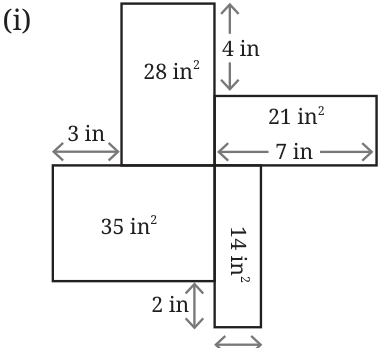
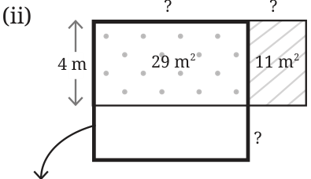
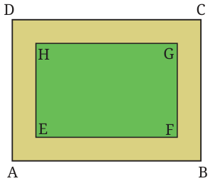
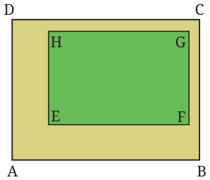
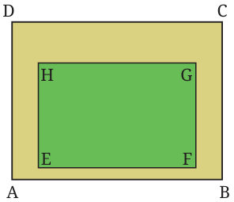
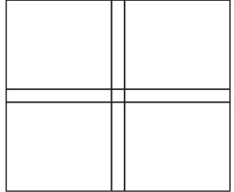
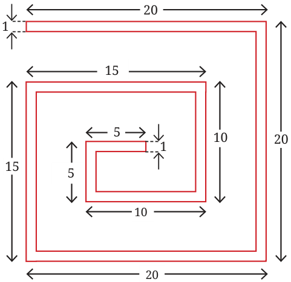
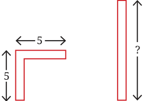
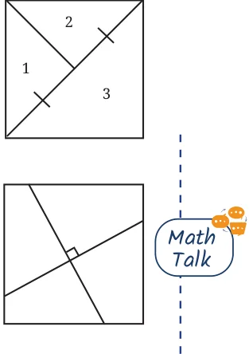

<!DOCTYPE html>
<html lang="en">
<head>
<meta charset="UTF-8">
<meta name="viewport" content="width=device-width,initial-scale=1">
<title>Figure it Out — Area</title>
<meta name="description" content="Class 8 Mathematics · Part 2 · Area · Figure it Out">
<link rel="icon" href="data:image/svg+xml,<svg xmlns='http://www.w3.org/2000/svg' viewBox='0 0 100 100'><text y='.9em' font-size='90'>📘</text></svg>">
<link rel="stylesheet" href="../../../assets/book.css">
<link rel="stylesheet" href="https://cdn.jsdelivr.net/npm/katex@0.16.11/dist/katex.min.css" crossorigin="anonymous">
</head>
<body>
<header class="topbar">
<div class="topbar-in">
  <div class="crumb">
    <span class="c1"><a href="../../../index.html">Library</a> · <a href="../../index.html">Class 8 Mathematics · Part 2</a></span>
    <span class="c2">Area · Figure it Out</span>
  </div>
  <a class="tb-btn" data-nav="prev" href="../../07-area/02-why-can-t-perimeter-be-a-measure-of-area/index.html" title="Why Can’t Perimeter be a Measure of Area?">←</a>
  <details class="drawer"><summary class="tb-btn" title="Sections in this chapter">☰</summary>
<div class="drawer-panel"><div class="dh">Area</div><a href="../01-rectangle-and-squares-7.1/index.html">7.1 Rectangle and Squares</a><a href="../02-why-can-t-perimeter-be-a-measure-of-area/index.html">Why Can’t Perimeter be a Measure of Area?</a><a href="../03-figure-it-out/index.html" aria-current="page">Figure it Out</a><a href="../04-triangles/index.html">Triangles</a><a href="../05-figure-it-out/index.html">Figure it Out</a><a href="../06-area-of-any-polygon/index.html">Area of any Polygon</a><a href="../07-figure-it-out/index.html">Figure it Out</a><a href="../08-parallelogram/index.html">Parallelogram</a><a href="../09-figure-it-out/index.html">Figure it Out</a><a href="../10-rhombus/index.html">Rhombus</a><a href="../11-trapezium/index.html">Trapezium</a><a href="../12-finding-the-area-using-two-copies-of-the-trapezium/index.html">Finding the Area Using Two Copies of the Trapezium</a><a href="../13-figure-it-out/index.html">Figure it Out</a><a href="../14-areas-in-real-life/index.html">Areas in Real Life</a><a href="../15-summary/index.html">SUMMARY</a></div></details>
  <a class="tb-btn" data-nav="next" href="../../07-area/04-triangles/index.html" title="Triangles">→</a>
  <button class="tb-btn" data-theme-toggle title="Toggle light / dark" aria-label="Toggle light or dark theme">◐</button>
</div>
<div class="progress"><span style="width:86.7%"></span></div>
</header>
<main class="wrap">
<div class="sec-head">
  <p class="eyebrow"><a href="../index.html">Chapter 7 · Area</a></p>
  <h1>Figure it Out</h1>
  <p class="sec-meta">Textbook pages 3–5 · 15 figures</p>
</div>
<article class="prose">
<ul class="qlist">
<li><span class="mk">1.</span><span class="lt">Identify the missing sidelengths.</span></li>
</ul>
<aside class="sidenote"><p>? ?</p></aside>
<figure class="fig"></figure>
<figure class="fig side-fig"></figure>
<div class="mathblock"><p>Area \(= 50 m\)</p></div>
<p>? in</p>
<figure class="fig wide"></figure>
<ul class="qlist">
<li><span class="mk">2.</span><span class="lt">The figure shows a path (the shaded portion)</span></li>
</ul>
<p>laid around a rectangular park EFGH. \(^{H} ^{G}\)</p>
<ul class="qlist">
<li><span class="mk">(i)</span><span class="lt">What measurements do you need to find</span></li>
</ul>
<p>the area of the path? Once you identify</p>
<p>the lengths to be measured, assign possible values of your choice to these _{A} _{B} measurements and find the area of the path. Give a formula for the area. An example of a formula - Area of a rectangle = length \(\times\) width. [Hint: There is a relation between the areas of EFGH, the path, and ABCD.]</p>
<ul class="qlist">
<li><span class="mk">(ii)</span><span class="lt">If the width of the path along each side is given, can you find</span></li>
</ul>
<p>its area? If not, what other measurements do you need? Assign values of your choice to these measurements and find the area of the path. Give a formula for the area using these measurements. [Hint: Break the path into rectangles.]</p>
<ul class="qlist">
<li><span class="mk">(iii)</span><span class="lt">Does the area of the path change when the outer rectangle is</span></li>
</ul>
<p>moved while keeping the inner rectangular park EFGH inside it, as shown?</p>
<figure class="fig"></figure>
<figure class="fig"></figure>
<figure class="fig side-fig"></figure>
<ul class="qlist">
<li><span class="mk">3.</span><span class="lt">The figure shows a plot with sides 14m and 12m, and with a</span></li>
</ul>
<figure class="fig side-fig"></figure>
<p>crosspath. What other measurements do you need to find the area of the crosspath? Once you identify the lengths to be measured, assign some possible values of your choice and find the area of the path. Give a formula for the area based on the measurements you choose.</p>
<figure class="fig"></figure>
<figure class="fig wide"></figure>
<figure class="fig wide"></figure>
<ul class="qlist">
<li><span class="mk">4.</span><span class="lt">Find the area of the spiral tube shown in the figure. The tube has the</span></li>
</ul>
<p>same width throughout.</p>
<figure class="fig table-fig"></figure>
<p>[Hint: There are different ways of finding the area. Here is one method.]</p>
<figure class="fig"></figure>
<p> What should be the length of the straight tube if it is to have the same area as the bent tube on the left?</p>
<figure class="fig side-fig"></figure>
<ul class="qlist">
<li><span class="mk">5.</span><span class="lt">In this figure, if the sidelength of the square is</span></li>
</ul>
<p>doubled, what is the increase in the areas of the regions 1, 2 and 3? Give reasons.</p>
<ul class="qlist">
<li><span class="mk">6.</span><span class="lt">Divide a square into 4 parts by drawing two</span></li>
</ul>
<p>perpendicular lines inside the square as shown in the figure.  Rearrange the pieces to get a larger square, with a hole inside. You can try this activity by constructing the square using cardboard, thick chart paper, or similar materials.</p>
<figure class="fig wide"></figure>
</article>
<nav class="pager"><a class="" data-nav="prev" href="../../07-area/02-why-can-t-perimeter-be-a-measure-of-area/index.html"><span class="dir">← Previous</span><span class="t">Why Can’t Perimeter be a Measure of Area?</span><span class="ch">Area</span></a><a class="nx" data-nav="next" href="../../07-area/04-triangles/index.html"><span class="dir">Next →</span><span class="t">Triangles</span><span class="ch">Area</span></a></nav>
</main><footer class="site">Generated from the source textbook PDFs · text, figures and exercises belong to their respective publishers.</footer><script defer src="https://cdn.jsdelivr.net/npm/katex@0.16.11/dist/katex.min.js" crossorigin="anonymous"></script>
<script defer src="https://cdn.jsdelivr.net/npm/katex@0.16.11/dist/contrib/auto-render.min.js" crossorigin="anonymous"
  onload="renderMathInElement(document.body,{delimiters:[
    {left:'\\(',right:'\\)',display:false},
    {left:'$$',right:'$$',display:true},
    {left:'\\[',right:'\\]',display:true}],throwOnError:false,ignoredTags:['script','noscript','style','textarea','pre','code']})"></script>
<script src="../../../assets/book.js"></script>
<script defer src="../../../../assets/search.js?v=1789782769"></script>
<script defer src="../../../../assets/screenshot.js?v=1789782769"></script>
</body>
</html>
